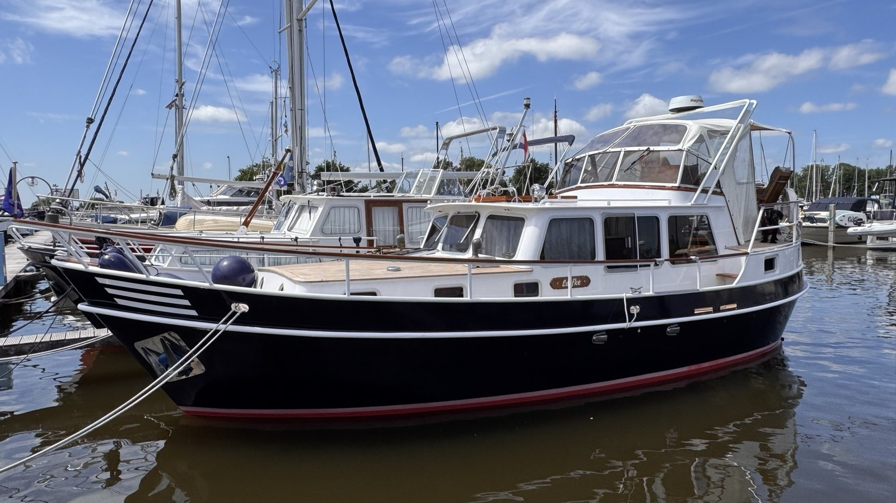

Das Bordtagebuch von
LEEFKE
Groeneveld Kotter · Finse · Baujahr 1996
Groeneveld Kotter · Heimathafen Lemwerder

Groeneveld Kotter · Finse · Baujahr 1996
LEEFKE ist unser 1996 gebauter Groeneveld Kotter der Baureihe Finse: ein 11,50 Meter langer Stahlverdränger mit klassischem Spitzgatt. Ruhig, solide und verlässlich bringt sie uns von der Weser hinaus auf Nord- und Ostsee.
Route, Wetter, Seegang und die besonderen Momente des Tages.
Der Eintrag wird sofort lokal auf diesem Gerät gespeichert. Wenn du angemeldet bist, wird er zusätzlich mit der LEEFKE-Cloud und den anderen Geräten synchronisiert.
Der komplette Törn der LEEFKE in einer gemeinsamen Übersicht – vom Ablegen bis zum nächsten Liegeplatz.
Jeder Törn hat seinen eigenen Törnplan, seine Tagestouren, GPX-Routen, Fotos, Hafenbesuche, Wetterdaten und Tankvorgänge. Schiffspass, Wartung, Vorräte und Sicherheitsausrüstung gelten dagegen für die LEEFKE insgesamt.
Eine Route vom Plotter oder Planungsprogramm auswählen. Danach kannst du sie direkt einer Etappe zuordnen und auf der Seekarte anzeigen.
Praktisch: Nach dem Import erscheint die Route automatisch in der Etappenplanung und in der Kartenauswahl.
Wind, Böen, Wellen, Wellenfolge, Strömung und modellierte Tide für einen Ort und ein Datum.
Wichtig: Der Messpegel bezieht sich auf das örtliche Pegelnull. Der Wert darf nicht direkt mit der modellierten Tidehöhe darüber verglichen werden.
| Zeit | Wetter | Wind | Böen | Welle | Periode | Dünung | Strömung | Tide |
|---|
| Punkt / ETA | Kurs | Wind | Welle | Periode | Einfall | Einschätzung |
|---|
Persönliche Hafenerfahrungen der LEEFKE – jetzt mit echten Sternbewertungen.
Tankvorgänge und Verbrauchswerte der LEEFKE mit 400-Liter-Tank.
Perkins M135, Bordtechnik und sicherheitsrelevante Arbeiten.
Was an Bord ist, wann Prüfungen fällig werden und wo Rechnungen oder Anleitungen abgelegt sind.
Vor dem Ablegen, nach dem Anlegen und für die Sicherheit an Bord.
Fotos aus Häfen, von Überfahrten und besonderen Tagen an Bord.
Aus Tagesberichten und Fotos entsteht ein druckbarer Reisebericht.
Der Bericht kombiniert Törnplan, Seekartenübersicht, Wetter, Tagesberichte, Hafenbewertungen, Verbrauch, Kosten und Fotos.
Die bekannten Schiffsdaten sind bereits hinterlegt und bleiben vollständig bearbeitbar.
Das mitgelieferte Foto kann jederzeit durch ein eigenes Startbild ersetzt werden. Nach Anmeldung wird es zusammen mit den Galeriefotos privat synchronisiert.
Logbuchdaten auf iPad, Handy und Windows gemeinsam nutzen – unterwegs weiterhin offline.
Die Demo läuft in einer eigenen lokalen Datenbank auf diesem Gerät. Änderungen werden nicht mit der LEEFKE-Cloud synchronisiert und sind für andere Geräte nicht sichtbar.
Eintragen
Neue Daten werden sofort auf dem Gerät gespeichert.
Unterwegs offline
Die LEEFKE-App bleibt auch ohne Mobilfunk nutzbar.
Automatisch abgleichen
Änderungen anderer Geräte kommen über die Live-Verbindung sofort an. Zusätzlich prüft die App alle 60 Sekunden leise im Hintergrund und beim Öffnen sofort.
Wichtig: Einträge vom Handy werden in die Cloud übertragen und anschließend auch auf Tablet und Laptop geladen. Eine vollständig geschlossene App wird beim nächsten Öffnen sofort aktualisiert.
Synchronisiert: Tageslogbuch, Törnplanung, Häfen, Tankbuch, Wartung, Checklisten, Schiffsdaten, GPX-Routen, Wettervorhersagen, Fotos, Dokumente, Vorräte und Sicherheitsprüfungen. Änderungen werden feldweise mit Zeit und Gerät protokolliert. Bei einem echten Widerspruch wird nichts still überschrieben – die App zeigt ihn unter „Verlauf & Konflikte“ an.
Öffnet einen vorbereiteten Demo-Törn in einem vollständig getrennten lokalen Datenbestand. Anmeldung und Cloud-Synchronisierung sind dafür nicht erforderlich.
Die App prüft selbst, ob dieses Gerät leer ist, ob bereits Cloud-Daten vorhanden sind oder ob auf beiden Seiten neue Einträge liegen. Vorhandene LEEFKE-Daten werden automatisch zusammengeführt; ein leeres Gerät übernimmt den Cloud-Datenstand.
Welche Änderung kam von welchem Gerät – und wo müssen zwei widersprüchliche Eingaben entschieden werden?
Die Cloud-Synchronisierung ersetzt keine eigene Sicherungsdatei. Ein Export ist vor größeren Änderungen weiterhin sinnvoll.
Alle Einträge, Schiffsdaten, GPX-Routen, Bewertungen und Fotos werden in einer Datei gesichert.